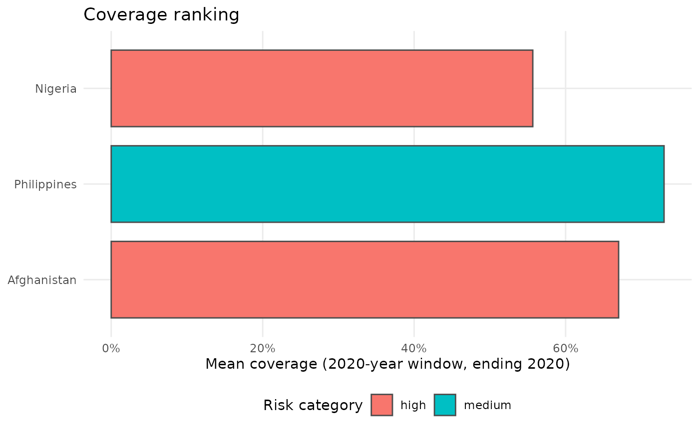
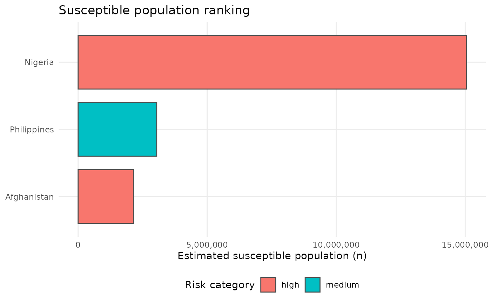

This vignette demonstrates the data access layer.
For reproducibility and fast vignette builds, we use a shipped global measles example panel and pinned fixtures.
The core public helpers are:
-
gho_find_indicator(): search the WHO GHO indicator catalogue -
get_coverage(): download and standardise a coverage series (returnsiso3,year,coverage) -
get_cases(): download and standardise a cases series (returnsiso3,year,cases)
The returned iso3 values are standardised to ISO3 codes
and year is an integer year.
library(vpdsus)
panel <- vpdsus_example_panel()
dplyr::glimpse(panel)
#> Rows: 17,419
#> Columns: 15
#> $ iso3 <chr> "ABW", "ABW", "ABW", "ABW", "ABW", "ABW", "ABW", "ABW"…
#> $ year <int> 1960, 1961, 1962, 1963, 1964, 1965, 1966, 1967, 1968, …
#> $ ind_mcv2 <int> NA, NA, NA, NA, NA, NA, NA, NA, NA, NA, NA, NA, NA, NA…
#> $ ind_whs3_62 <dbl> NA, NA, NA, NA, NA, NA, NA, NA, NA, NA, NA, NA, NA, NA…
#> $ ind_whs8_110 <int> NA, NA, NA, NA, NA, NA, NA, NA, NA, NA, NA, NA, NA, NA…
#> $ coverage <dbl> NA, NA, NA, NA, NA, NA, NA, NA, NA, NA, NA, NA, NA, NA…
#> $ mcv2 <int> NA, NA, NA, NA, NA, NA, NA, NA, NA, NA, NA, NA, NA, NA…
#> $ cases <dbl> NA, NA, NA, NA, NA, NA, NA, NA, NA, NA, NA, NA, NA, NA…
#> $ pop_total <dbl> 54922, 55578, 56320, 57002, 57619, 58190, 58694, 58990…
#> $ pop_0_4 <dbl> 7782.833, 7813.430, 7859.833, 7872.402, 7845.167, 7793…
#> $ pop_5_14 <dbl> 15565.67, 15626.86, 15719.67, 15744.80, 15690.33, 1558…
#> $ births <dbl> 1759.8656, 1735.4231, 1711.3395, 1689.2543, 1662.0777,…
#> $ country <chr> "Aruba", "Aruba", "Aruba", "Aruba", "Aruba", "Aruba", …
#> $ who_region <chr> "LCN", "LCN", "LCN", "LCN", "LCN", "LCN", "LCN", "LCN"…
#> $ who_region_name <chr> "Latin America & Caribbean ", "Latin America & Caribbe…Caching
Live downloads are cached as JSON under the user cache directory. You can inspect the cache location and size:
cache_dir <- tools::R_user_dir("vpdsus", which = "cache")
cache_files <- if (dir.exists(cache_dir)) list.files(cache_dir, recursive = TRUE, full.names = TRUE) else character()
tibble::tibble(
cache_dir = cache_dir,
n_files = length(cache_files),
bytes = if (length(cache_files)) sum(file.info(cache_files)$size, na.rm = TRUE) else 0
)
#> # A tibble: 1 × 3
#> cache_dir n_files bytes
#> <chr> <int> <dbl>
#> 1 /home/runner/.cache/R/vpdsus 0 0Indicator discovery (deterministic example)
The WHO GHO API exposes an indicator catalogue. Use
gho_find_indicator() to search for the code you need, then
pass that code into get_coverage() or
get_cases().
This vignette uses a pinned fixture so it can run deterministically in CI:
# Search the WHO GHO indicator metadata (offline fixture for this vignette)
m <- gho_find_indicator("measles", top_n = 10, offline = TRUE)
print(m)
#> # A tibble: 6 × 2
#> indicator_code indicator_name
#> <chr> <chr>
#> 1 MCV2 Measles-containing-vaccine second-dose (MCV2) immunization cov…
#> 2 mslv Measles immunization coverage among one-year-olds (%)
#> 3 vmsl Measles immunization coverage among one-year-olds (%)
#> 4 WHS2_168 Distribution of causes of death among children aged <5 years (…
#> 5 WHS3_62 Measles - number of reported cases
#> 6 WHS8_110 Measles-containing-vaccine first-dose (MCV1) immunization cove…
# Two useful measles-related indicators in this list are:
# - WHS8_110: MCV1 coverage
# - WHS3_62: reported measles casesCoverage + cases (fixture-based examples)
To keep this vignette deterministic, we use pinned single-country fixtures for:
- MCV1 coverage (USA, 2020) via indicator code
WHS8_110 - measles cases (USA, 2020) via indicator code
WHS3_62
The corresponding live calls would be:
get_coverage("MCV1")
get_cases("measles")Here we read the pinned raw JSON and standardise it to the package output columns.
# Coverage fixture
p_cov <- system.file("extdata", "fixtures", "gho_WHS8_110_USA_2020.json", package = "vpdsus")
txt_cov <- paste(readLines(p_cov, warn = FALSE, encoding = "UTF-8"), collapse = "\n")
raw_cov <- jsonlite::fromJSON(txt_cov)$value
cov <- tibble::as_tibble(raw_cov) |>
dplyr::transmute(
iso3 = toupper(trimws(as.character(.data$SpatialDim))),
year = as.integer(.data$TimeDim),
coverage = as.numeric(.data$Value) / 100
)
cov
#> # A tibble: 1 × 3
#> iso3 year coverage
#> <chr> <int> <dbl>
#> 1 USA 2020 0.91
# Cases fixture
p_cases <- system.file("extdata", "fixtures", "gho_WHS3_62_USA_2020.json", package = "vpdsus")
txt_cases <- paste(readLines(p_cases, warn = FALSE, encoding = "UTF-8"), collapse = "\n")
raw_cases <- jsonlite::fromJSON(txt_cases)$value
cases <- tibble::as_tibble(raw_cases) |>
dplyr::transmute(
iso3 = toupper(trimws(as.character(.data$SpatialDim))),
year = as.integer(.data$TimeDim),
cases = as.numeric(.data$Value)
)
cases
#> # A tibble: 1 × 3
#> iso3 year cases
#> <chr> <int> <dbl>
#> 1 USA 2020 1275Build a modelling-ready panel
Once you have standardised coverage, cases, and demography series you can join these into a country-year panel for downstream modelling:
demog <- get_demography(source = "fixture_wpp", years = 2020, countries = "USA")
panel_usa_2020 <- build_panel(
coverage = cov,
cases = cases,
demography = demog
)
panel_usa_2020
#> # A tibble: 1 × 8
#> iso3 year pop_total pop_0_4 pop_5_14 births coverage cases
#> <chr> <int> <dbl> <dbl> <dbl> <dbl> <dbl> <dbl>
#> 1 USA 2020 62250000 19500000 42750000 3700000 0.91 1275
panel_diagnostics(panel_usa_2020)
#> # A tibble: 1 × 4
#> n missing_coverage missing_cases missing_pop
#> <int> <int> <int> <int>
#> 1 1 0 0 0Where to go next (end-to-end workflow)
The functions above focus on data retrieval and standardisation. A typical end-to-end analysis then:
- builds a modelling-ready panel (coverage + cases + demography),
- estimates susceptibility, and
- produces a WHO-style risk ranking (and optionally fits outbreak models).
This repository ships vpdsus_example_panel() as a global
measles panel so the workflow can be demonstrated at realistic scale
without live downloads:
panel <- vpdsus_example_panel()
# 1) Susceptibility estimation (simple static method)
sus <- estimate_susceptible_static(panel, coverage_col = "coverage", pop_col = "pop_0_4")
# 2) Risk ranking (summarise recent coverage and take susceptibility at a year)
r <- risk_rank(panel, sus, window_years = 3, year_end = 2020)
# 3) Inspect / plot
head(r)
#> # A tibble: 6 × 9
#> iso3 coverage_mean who_region country susceptible_n susceptible_prop method
#> <chr> <dbl> <chr> <chr> <dbl> <dbl> <chr>
#> 1 IND 0.923 SAS India 13549246. 0.11 static
#> 2 NGA 0.58 SSF Nigeria 12219392. 0.4 static
#> 3 ETH 0.557 SSF Ethiopia 6894777. 0.43 static
#> 4 IDN 0.843 EAS Indonesia 5679747. 0.24 static
#> 5 COD 0.637 SSF Congo, D… 5599412. 0.38 static
#> 6 PAK 0.81 MEA Pakistan 5041704. 0.17 static
#> # ℹ 2 more variables: risk_category <fct>, rank_global <int>
plot_coverage_rank(r, top_n = 5)
plot_susceptible_rank(r, top_n = 5)
See the other vignettes for method choices and modelling:
- Susceptibility estimates and WHO-style ranking plots
- Outbreak models